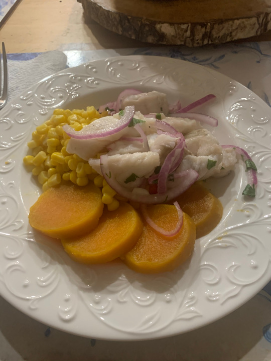

Peruvian-Style Ceviche
Arguably one of the most iconic dishes to come out of the Andean nation, and also one of the tastiest. Ceviche (seafood which is 'cooked' in acidity) comes in all different styles across Latin America, but none is more distinctive than the Peruvian style. The harsh bite of acidity mixed with the gentle sweetness of the sweet potato and corn makes for a Dr. Jekyll and Mr. Hyde experience in your mouth!
The key to this dish is fish selection. For me, it depends on the selection of fish at my local market. I will normally go for sole (if it's fresh), otherwise tilapia works as well. This dish can be prepared very spicy or mild (although the mild version has a bite!). I prefer it on the spicy side. It can be very difficult to source the authentic chile peppers used in this recipe (Aji), so I will offer alternative chile peppers that are commonly found in any supermarket.
I cannot say enough about this truly unique flavor profile - you will never eat another style ceviche ever again. It also doubles as a fantastic hangover remedy!
Without further ado, Ceviche Clasico:
Serves: 4
Ingredients:
- 4 Fish Filets (Sole, Tilapia, Grouper)
- 2 cloves finely chopped garlic
- 1 finely chopped Aji Limo chile*
- Fresh juice of about 12-15 lemons (enough to cover fish)
- Handful of roughly chopped cilantro
- Ice Cubes (maybe 2 or 3)
- 1 finely sliced red onion
- Salt and pepper
- 1 can of corn, drained (or 1 corn on cob, cooked and kernels removed)
- 1 sweet potato, boiled and skinned
- Cut fish filets into 1-inch cubes and place in a bowl with salt and pepper.
- Add garlic and Aji Limo and mix together.
- Pour lemon juice, chopped cilantro and ice cubes over fish and let stand for a few minutes.
- Add red onion, remove ice cubes and season to taste.
To serve:
Add a hunking spoonful of ceviche to a small plate and serve with corn and sliced sweet potato on the side.
Alternate between eating the spicy, tangy fish and the un-seasoned sweet potato/corn for a taste bud rollercoster!